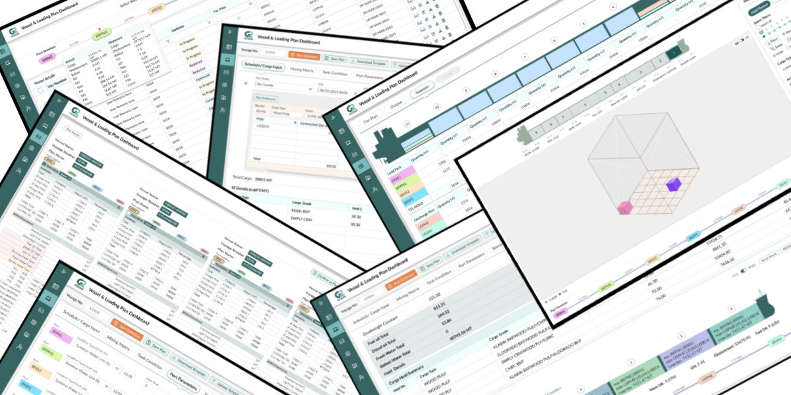

DESIGNING A BETTER EXPERIENCE
DESIGNING A BETTER EXPERIENCE


G2O Shipping is a bulk carrier shipping company that uses this application for its stowage and voyage planning operations. The platform helps the team efficiently manage cargo distribution, optimize vessel performance, and ensure safe and compliant voyages."
| Time span | Description | Time line |
|---|---|---|
| Span 1 | Define Requirement and first level of Maping. | 10 Days |
| Span 2 | User research - Personas - List out Problems - Empathy maping. | 10 Days |
| Span 3 | Analysis -Reframing- Mindmaping- Scenarios - Userstories. | 20 Days |
| Span 4 | Design Sketches - Wire-framing - Define style and brand - Highlevel wireframe - Interactive prototype. | 20 Days |
| Span 5 | Delivery -Test- Production. | - |

| competitor 1 | competitor 2 | competitor 3 | |
|---|---|---|---|
| Strengths |
Visual Data Storytelling: Complex data (routes, weather, costs) is presented in clear charts, maps, and graphs. This reduces cognitive load in parsing dense tables. Responsive and dynamic Clean, Modern Aesthetic: /b>Uses contemporary UI patterns (clean lines, ample white space, logical grouping) that feel professional and uncluttered. |
Drag-and-drop cargo, visually see the hull stress change, and get instant feedback. This creates a satisfying feedback loop. The interface likely shows only the necessary tools and data for the task at hand, avoiding overwhelming the user. Advanced options are there when needed. It translates abstract calculations (bending moments, stability) into visual cues (color-coded stress maps, 3D models), which is a far more natural way for humans to understand spatial and physical problems. |
Consistency : Once a user learns the system's logic and navigation patterns, they can perform a wide variety of tasks without relearning the interface from scratch. Keyboard-Driven Efficiency: For power users, the interface likely supports heavy keyboard use and shortcuts, allowing for very fast data entry without touching the mouse. Single Context, Deep Data: The user rarely has to leave the system to find a piece of commercial or operational data. This avoids the tab-switching chaos of using multiple best-of-breed tools. |
| Weaknesses |
The "Black Box" Anxiety: The UI doesn't always adequately explain why it chose a specific route. The lack of transparency in the AI's decision-making breeds mistrust. There's a risk of "dashboard overload" presenting too many metrics and visualizations at once, leaving the user to figure out what's important. |
The "Island of Excellence": The UX is so focused on the stowage task that it feels disconnected from the wider commercial reality. The delightful experience ends abruptly when the user needs to check demurrage or voyage costs, forcing a jarring context switch to another system. Potential for Over-Simplification: In an effort to be user-friendly, it might abstract away too much technical detail that an expert planner wants to see or control directly. While it may have sharing features, the core UX is built for a single expert user. Real-time, multi-user collaboration might not feel as seamless as in modern document editors. |
Steep Learning Cliff: The onboarding experience is notoriously difficult. The interface presents a vast array of menus, tabs, and data fields with little guidance, creating a high barrier to entry and necessitating expensive, ongoing training. Visual Clutter & Cognitive Load: Screens are often packed with information, much of which is not relevant to the user's immediate task. This forces the user to constantly scan and filter, leading to mental fatigue. "Cobbled-On" Feel: Newer features or acquired modules can feel visually and navigationally disconnected from the core system, breaking the user's mental model and creating a disjointed experience. |
| Observations/ Opportunities | Build "Explainable AI." Create a UI that visually explains the trade-offs behind every recommendation. Use clear language like, "We chose this route because the fuel savings of $15k outweigh the 6-hour delay." Build trust through transparency. | Create a "Seamless Operational Canvas." Embed the stowage planner within a broader workflow that includes voyage economics, port agent communication, and document generation. Make the transition between tasks feel fluid, not jarring. | Champion "Radical Clarity." Build an interface that is task-centric, not data-centric. Use progressive disclosure, intelligent defaults, and a clean, modern aesthetic to reduce cognitive load from day one. Focus on making the user feel smart and fast, not just powerful. |
| 0 50% | Says-it is diificult to collating data from dozens of different sources such as email, Data sheet, weather report, port reopre etc.. They need a single platform to get informed |
|---|---|
| 0 60% | Needed predict reoprt on port congestion and ETAs with higher accuracy |
| 100% | Said that they need Visual Plans such as 2D/3D visuals of tier plans. |
| 080% | Facing Language and Cultural Barriers |
| 0 60% | Need auto suggestions, visual difference at data items in long list, fiters etc.. to reduce Cognitive load |
| 100% | of participants said that they want reduce the effort of typing the similar/ same data enter again and again. |
| 100% | Sait that it should be informative on auto solutions and suggestions. |
| 0 75% | require plan comparison |
| 0 75% | Need to see live in the real world |
| Need 1 | Need 2 | Need 3 |
|---|---|---|
| Users need to be able to track the vessel and details in live | Make their life easier to impliment autofill and tooltips, responce, auto save, and interactions on the journey | Find out simple solitions for reducing their Cognitive load |
 Kari Johansen- Planner Senior Voyage & Stowage Planner Age range: 38 - 4510+Years ExperienceLocation: Bergen, Norway (operates globally) Adventure Technically- savvy |
About Kari: Kari is responsible for designing and managing stowage plans for a fleet of open-hatch vessels that carry pulp, timber, and industrial cargo worldwide. She works under tight time frames to ensure the vessel remains stable, safe, and compliant while optimizing loading and discharge efficiency. Her day typically involves analyzing cargo lists, checking port gear availability, validating stability data, and communicating with multiple teams. Goals & Motivations: 1. Ensure safe and compliant cargo stowage no overloading, damage, or imbalance. 2. Optimize vessel utilization minimize empty space and reduce port turnaround time. 3. Increase planning efficiency through visual tools and automation. 4. Maintain coordination across operations, chartering, and port teams. Key Responsibilities: 1. Plan and update stowage for each voyage. 2. Validate cargo loading sequences and weight distribution. 3. Liaise with port agents and stevedores to confirm lifting gear and schedules. 4. Generate and share voyage stowage reports with stakeholders. |


| Think & feel • Anxiety about hidden risks and potential errors. • Frustrationwith clunky interfaces and broken workflows. • Pressure from management to reduce costs and from operations to be practical. • Isolation from the real-world execution of their plans. • Skepticism towards automated recommendations that lack explanation. |
Hear • From Management: "We need to improve our profitability per voyage. Use the optimizer!" • From the Ship's Master (via email): "The terminal foreman says your loading sequence is impractical. We need a revised plan." • From Charterers: "Why is your ETA changing again? This will impact demurrage." • From Port Agent: "The disbursement account will be 15% higher than estimated due to extra fees." • From Teammates: "How do you do that calculation in [Software Name]? I can never find the option." |
| See • Multiple monitors cluttered with spreadsheets, email, AIS tracking, and several software applications that don't talk to each other. • A long, chaotic email thread with the charterer, broker, and port agent, containing critical information buried in the chain. • A complex stowage plan on one screen and a separate voyage P&L spreadsheet on another. • A flashing chat message from the Port Captain asking for an urgent update. |
Say and do • Constantly switching tabs/windows between email, the voyage system, and the AIS tracker. • Picking up the phone to call the agent because anemail reply is taking too long. • Scrolling rapidly through a dense screen, searching for one specific data point. |
| Gain • Intuitive visualization: Clear 2D/3D vessel view with easy cargo placement. • Real-time validation: Automatic checks for balance, weight, and lashing compliance. • Collaborative features: Shared workspace for planners, captains, and port staff. • Quick reporting/ Optimizing: One-click generation of loading plans and compliance reports. |
 Issues Issues |
 UX Solution UX Solution |
|---|---|
|
Version Confusion - with multiple plans. Receive several versions of the same plan (e.g., Plan_v3_final_final.pdf 😅). Cannot easily distinguish what changed between versions. Don’t know which one is approved or currently active. Waste time checking email attachments or shared folders. |
1. Introduce a versioning system within the application: Version number + date/time + author name displayed prominently. 2. Use color-coded status tags: 🟢 Approved / Final 🟡 Draft / Pending Review 🔴 Outdated / Superseded 3. Auto-highlight to Which plan is current, What changed, Who approved it, Where to find older versions (if needed) |
|
Weather and route constraints. Users face challenges such as: 1. Having to manually check weather forecasts or external route advisories. 2. Difficulty visualizing how weather impacts route decisions, fuel usage, or ETA. 3. Lack of real-time updates or alerts within the planning interface. |
Weather-Integrated Route Visualization : 1. Data Simplification & Color Logic. Instead of showing complex meteorological data Use traffic-light color coding for risk: 🟢 Safe 🟡 Caution 🔴 Unsafe Show small icons for condition types (e.g., 🌧️ Rain, 🌊 Swell, 💨 Wind) Outcome: Users can see, predict, and respond to weather and route constraints without leaving the application — improving both decision quality and confidence. |

| Style | Type face | Weight | |
|---|---|---|---|
| Display- Large | Lato | Regular | 34 |
| H1 | Lato | Regular | 28 |
| H2 | Lato | Regular | 26 |
| H3 | Lato | Regular | 24 |
| Headline | Lato | Regular | 20 |
| Head line Bold | Lato | Bold | 18 |
| Sub Header | Lato | Regular | 18 |
| Sub Header Bold | Lato | Bold | 16 |
| Body | Lato | Regular | 16 |
| Body Bold | Lato | Bold | 14 |
| Body Highlight | Lato | Semi Bold | 16 |
| Body Small | Lato | Regular | 14 |
| Body Smallest | Lato | Regular | 12 |